NIHAO XII: التجانس المجري في كون
الملخص
نستخدم عينة من 83 محاكاة كونية عالية الدقة من نوع التكبير zoom-in ونموذجا شبه تحليلي (SAM) لدراسة عشوائية تشكل المجرات في هالات تمتد من كتل المجرات القزمة إلى كتل مجرة درب التبانة. تعيد مجراتنا المحاكاة إنتاج عدم كفاءة تشكل المجرات المرصود كما يظهر من علاقات تولي-فيشر النجمية والغازية والباريونية. بالنسبة إلى سرعات Hi في المجال ( km/s)، لا يتجاوز التشتت 0.08 إلى 0.14 dex، وهو متسق مع التشتت الذاتي المرصود عند هذه المقاييس. أما عند السرعات المنخفضة ( km/s)، فيبلغ التشتت المحاكى 0.2-0.25 dex، ويمكن اختبار ذلك برصود مستقبلية. يكون التشتت في علاقة الكتلة النجمية بسرعة الهالة المظلمة ثابتا من أجل ، وأصغر ( dex) عند استخدام السرعة الدائرية العظمى لمحاكاة المادة المظلمة فقط، ، مقارنة بالسرعة الفريالية ( أو ). يرتبط التشتت في الكتلة النجمية بتركيز الهالة، ويبلغ حده الأدنى عند استخدام سرعة دائرية عند كسر ثابت من نصف القطر الفريالي أو مع عندما يكون ، بما يتسق مع القيود المستمدة من تكتل الهالات. وباستخدام SAM نبيّن أن الارتباط بين زمن تشكل الهالة وتركيزها أساسي لإعادة إنتاج هذه النتيجة. إن هذا التجانس في كفاءة تشكل المجرات، كما نراه في محاكياتنا الهيدروديناميكية وفي نموذج شبه تحليلي، يبرهن بساطة تشكل المجرات وطبيعته ذاتية التنظيم في كون من مادة مظلمة باردة (CDM).
keywords:
الطرائق: عددية – المجرات: المعلمات الأساسية – المجرات: الهالات – المجرات: الحركيات والديناميكيات – المادة المظلمة1 مقدمة
تأتي المجرات بتنوع واسع في الأحجام والأشكال والكتل، ومع ذلك تخضع خواصها البنيوية لعدد من علاقات القياس، مما يلمح إلى بساطة كامنة في عملية تشكل المجرات التي تبدو عشوائية في كون هرمي. إن الارتباط بين الديناميكيات واللمعان ارتباط أساسي بسبب تشتته الصغير، وبسبب الصلة التي يوفرها بين الباريونات والمادة المظلمة. وتعرف هذه العلاقة باسم علاقة تولي-فيشر (TF; Tully & Fisher, 1977) وعلاقة فابر-جاكسون (FJ; Faber & Jackson, 1976)، للمجرات الحلزونية/المتأخرة النمط/المشكلة للنجوم وللمجرات الإهليلجية/المبكرة النمط/الخامدة، على الترتيب. في الدراسات الأصلية تتبعت الديناميكيات بعرض خط 21cm للهيدروجين المتعادل (Hi) في المجرات الحلزونية، وبانتشار السرعات النجمية في المجرات الإهليلجية. أما في الدراسات الأحدث، فقد استبدل اللمعان بالكتلة النجمية أو الباريونية (المعرّفة بأنها النجوم مضافا إليها الغاز المتعادل) (e.g., McGaugh et al., 2000; Bell & de Jong, 2001)، وغالبا ما يشار إلى هذه العلاقات باسم علاقَي تولي-فيشر النجمية والباريونية (BTF)، على الترتيب. ومن أجل وضع كل أنواع المجرات على العلاقة نفسها يمكن استخدام السرعات الدائرية المقيسة عند نصف القطر المرجعي نفسه (Dutton et al., 2010b, 2011).
تعد علاقة TF معيارا لأي نظرية ناجحة لتشكل المجرات. ينشأ الميل بصورة طبيعية في نماذج تشكل المجرات القائمة على المادة المظلمة الباردة (CDM) (e.g., Mo et al., 1998; Navarro & Steinmetz, 2000; Dutton et al., 2007)، لكن إعادة إنتاج التطبيع كانت أكثر صعوبة، إذ تتنبأ النماذج دائما بسرعات دوران أعلى عند كتلة نجمية ثابتة مما يرصد (e.g. Navarro & Steinmetz, 2000; Governato et al., 2007; Marinacci et al., 2014). ومن المساهمين في هذه المشكلة أن تكون المجرات المحاكاة شديدة الانضغاط. غير أن Dutton et al. (2007, 2011) أظهرا أنه عندما تقيد النماذج بإعادة إنتاج أحجام المجرات، فإنها تفرط أيضا في التنبؤ بالسرعات الدائرية إذا انكمشت الهالات استجابة لتشكل المجرات (Blumenthal et al., 1986; Gnedin et al., 2004). وقد تحققت دراسات لاحقة من مثل هذا الاستنتاج (e.g., Desmond & Wechsler, 2015; Chan et al., 2015).
وثمة قريب وثيق لعلاقة TF هو العلاقة بين الكتلة النجمية للمجرة وكتلة الهالة المظلمة. وقد درست علاقة مقابل على نطاق واسع باستخدام أرصاد العدسة الثقالية الضعيفة، وحركيات الأقمار، ومطابقة وفرة الهالات (e.g., Yang et al., 2003; Mandelbaum et al., 2006; Conroy & Wechsler, 2009; Moster et al., 2010; More et al., 2011; Leauthaud et al., 2012; Behroozi et al., 2013; Hudson et al., 2015). ومن النتائج الرئيسة لهذه الدراسات أن تشكل النجوم غير كفء. تبلغ الكفاءة العظمى ، وهي مستقلة عن الانزياح الأحمر، وتحدث عند كتلة هالة مشابهة لكتلة درب التبانة (أي ). وعند كتل الهالات الأكبر والأصغر تنخفض الكفاءة أكثر.
يصعب قياس التشتت في الكتلة النجمية عند كتلة هالة ثابتة رصديا (لأن كتل الهالات لا يمكن قياسها بصورة موثوقة للمجرات المنفردة)، لكنه يقدر بأنه صغير، dex، ومستقل عن كتلة الهالة (More et al., 2011; Reddick et al., 2013). لاحظ أن التشتت في كتلة الهالة عند كتلة نجمية ثابتة ليس ثابتا، بل يزداد مع الكتلة النجمية بسبب ضحالة ميل علاقة عند كتل الهالات العالية. وبالمثل، فإن التشتت المرصود في علاقة TF صغير، dex في الكتلة (أو اللمعان) عند سرعة ثابتة (Courteau et al., 2007; Reyes et al., 2011; McGaugh, 2012). إن التشتت الأقصى المسموح به في نسبة الكتلة النجمية إلى كتلة الهالة وفق علاقة TF أكبر قليلا من التشتت المرصود، لأن اختلاف نسبة الكتلة النجمية إلى كتلة الهالة يحرك المجرات جزئيا على امتداد علاقة TF (Dutton et al., 2007). غير أن المساهمات الناتجة من اختلاف تراكيز الهالات المظلمة، ونسب الكتلة النجمية إلى الضوء (سواء الاختلافات الذاتية أو لايقين القياس) تخفض التشتت المسموح به إلى أقل من 0.2 dex.
يأتي أفضل متتبع لكتل الهالات في المجرات المنفردة من سرعات دوران المجرات عند أنصاف أقطار مجرية كبيرة المستمدة من خط 21 cm للهيدروجين المتعادل. وعلاقة BTF هي ارتباط بين الكتلة الباريونية للمجرة، ، (النجوم زائد الغاز المتعادل) وسرعة الدوران عند أنصاف أقطار كبيرة، ، (عادة في الجزء المسطح من منحنى الدوران). وهي امتداد للعلاقة الأصلية بين عرض الخط واللمعان لدى Tully & Fisher (1977). وبما أن سرعة الدوران المرصودة مرتبطة بالسرعة الفريالية للهالة (Dutton et al., 2010b)، فإن BTF توفر أقرب قيد رصدي مباشر على كفاءة تشكل المجرات. يبلغ التشتت المرصود في BTF مقدار dex في الكتلة الباريونية عند سرعة دوران ثابتة (McGaugh, 2012; Lelli et al., 2016). ومع احتساب لايقينات القياس يبلغ التشتت الذاتي dex. وباستخدام نموذج شبه تحليلي (SAM; Dutton & van den Bosch, 2009) لتشكل المجرات القرصية، وجد Dutton (2012) تشتتا نموذجيا قدره dex. وبما أن هذا النموذج يضع بعض الافتراضات التبسيطية (مثل تواريخ تراكم كتلي ملساء)، فقد يتوقع أن يقلل من التشتت الحقيقي. ومن ثم فثمة تعارض محتمل بين التشتت المرصود والمتنبأ به في BTF.
يرصد أن تشكل المجرات غير كفء ومع ذلك متجانس بدرجة لافتة. فهل يمكن إعادة إنتاج ذلك في سيناريو تشكل البنية وفق مادة مظلمة باردة (CDM)؟ وأي تعريف لكتلة المجرة وكتلة الهالة هو الأكثر إحكامًا في الارتباط؟ لمعالجة هذه الأسئلة، ندرس العلاقات بين كتلة المجرة والسرعة الدائرية في عينة جديدة من محاكيات كونية عالية الدقة ( جسيم لكل مجرة) من مشروع Numerical Investigation of a Hundred Astrophysical Objects (NIHAO) (Wang et al., 2015). وتنظم هذه الورقة على النحو الآتي: توصف محاكيات NIHAO وخواص المجرات المشتقة في §2، وتعرض علاقات السرعة والكتلة في §3، وتعرض الآثار المتعلقة بمطابقة وفرة الهالات في §4، ويقدم ملخص في §5.
2 محاكاة تشكل المجرات
نصف هنا بإيجاز محاكيات NIHAO. ونحيل القارئ إلى Wang et al. (2015) للاطلاع على مناقشة كاملة. NIHAO هي عينة من محاكاة كونية هيدروديناميكية 90 من نوع zoom-in تستخدم شيفرة هيدروديناميك الجسيمات الملساء gasoline (Wadsley et al., 2004)، مع تحسينات في الهيدروديناميك كما وصفها Keller et al. (2014). اختيرت الهالات عند الانزياح الأحمر من محاكيات أم غير تبددية بأحجام 60 و20 و15 Mpc، معروضة في Dutton & Macciò (2014)، والتي تعتمد كوسمولوجيا CDM مسطحة بمعلمات من Planck Collaboration et al. (2014): معامل هابل = 67.1 Mpc-1، وكثافة المادة ، وكثافة الطاقة المظلمة ، وكثافة الباريونات ، وتطبيع طيف القدرة ، وميل طيف القدرة . وتنتقى الهالات بصورة منتظمة في لوغاريتم كتلة الهالة من إلى دون الرجوع إلى تاريخ اندماجات الهالة أو تركيزها أو معامل لفها. وينفذ تشكل النجوم والتغذية الراجعة كما في Stinson et al. (2006, 2013). وتختار كتلة الجسيمات وتليين القوى لحل ملف الكتلة عند من نصف القطر الفريالي، مما يؤدي إلى وجود جسيم مادة مظلمة داخل نصف القطر الفريالي لكل الهالات عند . والدافع وراء هذا الاختيار هو ضمان أن تحل المحاكيات ديناميكيات المجرة على مقياس أنصاف أقطار نصف الضوء، التي تكون عادة من نصف القطر الفريالي (Kravtsov, 2013).
لكل محاكاة هيدروديناميكية محاكاة مقابلة للمادة المظلمة فقط (DMO) بالدقة نفسها. وفي بعض الحالات تكون هذه المحاكيات في حالات تطورية مختلفة، بسبب وقوع اندماج كبير في وقت مختلف. ومن أجل مقارنة عادلة بين محاكيات hydro وDMO، نحذف أربع هالات يوجد فيها فرق كبير ( عامل 1.3) بين كتل الهالات في محاكيات hydro وDMO (انظر الشكل 1 في Dutton et al., 2016). وبالإضافة إلى ذلك نحذف الهالات الثلاث الأعلى كتلة (g1.77e12، g1.92e12، g2.79e12)، إذ توجد دلائل على أنها كوّنت نجوما أكثر مما ينبغي، ولا سيما قرب مراكز المجرات. وتتكون العينة النهائية من 83 محاكاة.
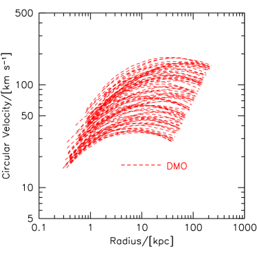
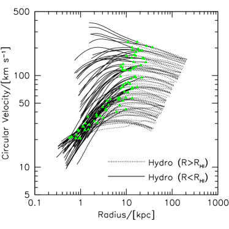
2.1 معلمات المجرات والهالات المشتقة
حُددت الهالات في محاكيات NIHAO من نوع zoom-in باستخدام محدد الهالات الهجين MPI+OpenMP ahf22 2 http://popia.ft.uam.es/AMIGA (Gill et al., 2004; Knollmann & Knebe, 2009). يحدد ahf فرط الكثافة المحلي في مجال كثافة مملس تكيفيا بوصفه مراكز هالات محتملة. وتعرّف الكتل الفريالية للهالات بأنها الكتل داخل كرة يكون متوسط كثافتها 200 مرة من كثافة المادة الحرجة الكونية، . نرمز إلى الكتلة الفريالية والحجم والسرعة الدائرية لمحاكيات hydro كما يلي: . وترمز الخواص المقابلة لمحاكيات DMO بأس علوي، . أما بالنسبة إلى الباريونات، فنحسب الكتل المحصورة داخل كرات نصف قطرها ، وهو ما يقابل إلى kpc. الكتلة النجمية داخل هي ، والغاز المتعادل داخل هو ، حيث تحسب كتلة الهيدروجين المتعادل، Hi، باتباع Rahmati et al. (2013) كما هو موصوف في Gutcke et al. (2017). وتعرّف الكتلة الباريونية للمجرة بأنها ، في حين أن الكتلة الباريونية الفريالية هي كل النجوم والغاز داخل . ونقيس السرعة الدائرية عند عدد من أنصاف الأقطار كما نناقش أدناه.
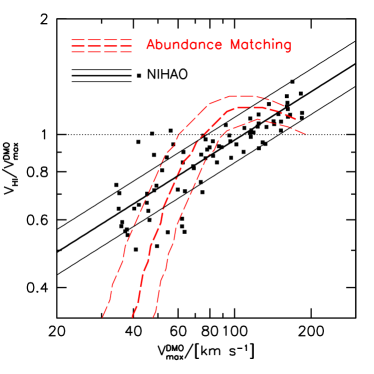
2.2 تعريفات السرعة الدائرية
نظرا إلى أن ملفات السرعة الدائرية للمجرات ليست ثابتة، فإن اختيار السرعة الدائرية المعتمد سيؤثر في ميل علاقة TF ونقطة الصفر والتشتت (e.g., Brook et al., 2016; Bradford et al., 2016). وتبعا لأهداف الدراسة ينبغي اعتماد تعريفات مختلفة. فعلى سبيل المثال، تكون القياسات عند أنصاف أقطار صغيرة أكثر حساسية لتوزيع الباريونات ولاستجابة الهالة، في حين أن القياسات عند أنصاف أقطار كبيرة تمثل مسبارا أفضل لكتلة الهالة.
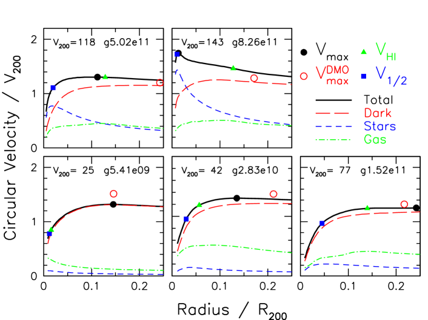
يعرض الشكل 1 ملفات السرعة الدائرية، ، للمجرة الرئيسة في كل محاكاة zoom-in. ويبين تنوع ملفات السرعة الدائرية لمحاكيات hydro (اللوحة اليمنى، الخطوط السوداء)، مقارنة بالمحاكيات غير التبددية (اللوحة اليسرى، الخطوط الحمراء المتقطعة). وبخاصة عند أنصاف الأقطار الصغيرة، تظهر سرعات أخفض وأعلى (نسبة إلى المحاكيات غير التبددية). فالسرعات الأخفض ناتجة من تمدد هالة المادة المظلمة (Dutton et al., 2016; Tollet et al., 2016)، في حين أن السرعات الأعلى ترجع أساسا إلى انهيار الباريونات. وتظهر المثلثات الخضراء السرعة الدائرية عند نصف قطر Hi ، ، الذي يعرّف بأنه يحصر 90% من تدفق Hi في إسقاط وجهي. ويحدث ذلك عادة عند من نصف القطر الفريالي، باستثناء المجرات الأقل كتلة حيث يقع نصف قطر Hi عند كسر أصغر من نصف القطر الفريالي بسبب تأين كمية كبيرة من الغاز البارد K.
تتبع سرعة Hi عادة السرعة الدائرية العظمى لمحاكاة DMO (الشكل 2)، مرة أخرى مع استثناء المجرات منخفضة الكتلة. إن العلاقة بين و تلاءم جيدا بقانون قوة ذي ميل أكبر من الواحد:
| (1) |
مع تشتت قدره 0.06 dex في عند ثابتة. وللمقارنة، تبين الخطوط الحمراء العلاقة بين و عند تطبيق مطابقة وفرة الهالات على دالة السرعة (Papastergis et al., 2015)، وهي تتفق عموما على نحو مشجع مع محاكيات NIHAO. وتوجد بعض المحاذير في المقارنة المباشرة (انظر Macciò et al., 2016, لمناقشة أكثر تفصيلا). وباختصار، تستند دالة السرعة المرصودة إلى عروض خطوط Hi ، وهي لا تتبع بالضرورة السرعة الدائرية عند نصف قطر Hi . وقد طبق Papastergis et al. (2015) تصحيح ميل بافتراض أقراص دوارة رقيقة، في حين يمكن أن يكون دعم الضغط غير مهمل، ولا سيما في المجرات منخفضة الكتلة. وتفترض مطابقة الوفرة عدم وجود تشتت في سرعة المجرة عند سرعة هالة ثابتة، بينما تجد المحاكيات تشتتا كبيرا.
يعرض الشكل 3 عينة ممثلة من خمسة منحنيات سرعة دائرية لهالات تتراوح سرعتها الفريالية من إلى . وتبين الخطوط السوداء السميكة السرعة الدائرية الكلية، التي تفكك إلى مساهمات النجوم (خطوط زرقاء قصيرة التقطع)، والمادة المظلمة (خطوط حمراء طويلة التقطع)، والغاز (خطوط خضراء خط-نقطة). وتهيمن المادة المظلمة على الهالات منخفضة الكتلة عند كل أنصاف الأقطار. وتسهم الباريونات، ولا سيما النجوم، بمقدار أكبر في الهالات الأكثر كتلة. وفي الهالات ذات تهيمن الباريونات على المركز.
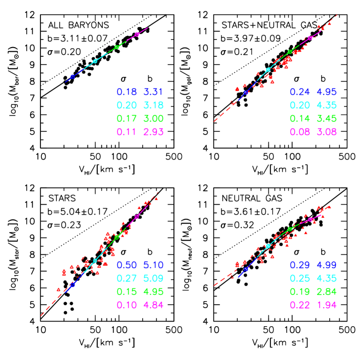
لكل مجرة تعرض سرعات دائرية عند أربعة أنصاف أقطار: (مربع أزرق) مقيسة عند نصف القطر الذي يحصر (داخل كرة) نصف الكتلة النجمية؛ (مثلث أخضر ممتلئ) مقيسة عند نصف قطر Hi ؛ (دائرة سوداء) وهي السرعة الدائرية العظمى لمحاكاة hydro، و (دائرة حمراء مفتوحة) وهي السرعة الدائرية العظمى لمحاكاة المادة المظلمة فقط. تنحصر النجوم في بضعة في المئة من نصف القطر الفريالي، ومن ثم فإن يتتبع عادة الجزء الصاعد من ملف السرعة. ويقع نصف قطر Hi عادة عند 5-15 في المئة من نصف القطر الفريالي، ومن ثم يتتبع الجزء ‘المسطح’ من منحنى الدوران. وتكون عادة أعلى من السرعة الفريالية، ، بنسبة 20 إلى 40 في المئة. وتقع السرعة الدائرية العظمى لمحاكاة DMO عند في المئة من نصف القطر الفريالي، ومن ثم يمكن غالبا تقريبها بواسطة .
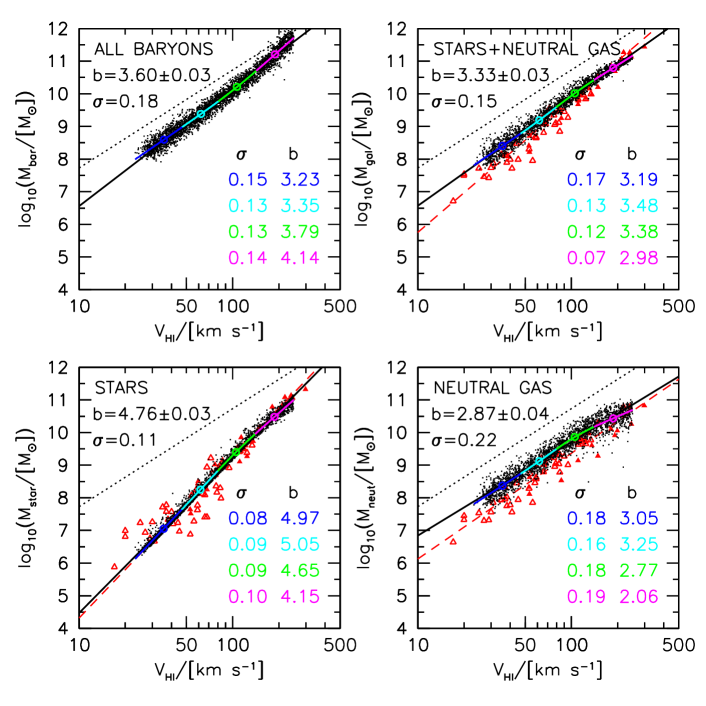
3 علاقات تولي-فيشر
نبني الآن علاقات TF مختلفة. نلائم هذه العلاقات بخط مستقيم باستخدام المربعات الصغرى الخطية. وهنا يكون متوسط . وبوجه عام يكون المتغير المستقل هو لوغاريتم سرعة ، بينما يكون المتغير التابع هو لوغاريتم كتلة . ونقدر لايقينات و باستخدام إعادة أخذ العينات بطريقة jackknife. ونحسب التشتت حول العلاقة ذات أفضل ملاءمة باستخدام المئين 68 من البواقي المطلقة، ، وهو أقل حساسية من الانحراف المعياري للنقاط الشاذة.
ولتقدير اعتماد الميول والتشتت على السرعة، نقسم السرعات إلى رباعيات ونلائم كل ربعية بصورة مستقلة. ويعطي ذلك قيمة وسطية لـ في أربع خانات سرعة، ثم نستوفيها بمنحنى spline لإنشاء علاقة وسطية عبر كامل مجال . وهذا يضمن استمرارية العلاقات الوسطية عبر حدود الخانات. ثم نحسب التشتت حول هذه العلاقة الوسطية، والميول الموضعية في خانات السرعة الأربع. وتعرض الميول والتشتت في كل ربعية سرعة في الزاوية السفلية اليمنى من الشكل 4.
3.1 مقارنة مع علاقات TF المرصودة
نبدأ بمقارنة مع الأرصاد، ومن ثم نستخدم المتاح رصديا. في الشكل 4، تمثل الدوائر السوداء الممتلئة محاكيات NIHAO، بينما تبين المثلثات الحمراء المفتوحة والممتلئة أرصادا من McGaugh (2012) وMcGaugh & Schombert (2015)، على الترتيب. وبالنسبة إلى بيانات McGaugh & Schombert (2015) تستخرج الكتل النجمية من قياسات ضوئية عند m بافتراض نسبة كتلة نجمية إلى ضوء مقدارها 0.45. أما في الأرصاد، فتقاس في الجزء ‘المسطح’ من منحنى دوران Hi . تذكر أنه في المحاكيات تقاس عند نصف قطر يحصر 90% من الغاز المتعادل. ومن المحاذير المهمة المحتملة في مقارنتنا أن الأرصاد تستخدم سرعات الدوران، بينما نستخدم في المحاكيات السرعة الدائرية (المتناظرة كرويا).
وكما سنرى، يوجد عموما اتفاق جيد بين المحاكيات والأرصاد، رغم وجود اختلافات تفصيلية. ونناقش كل علاقة من علاقات TF تباعا أدناه. وباختصار، تحتوي المحاكيات على كميات معقولة من النجوم والغاز المتعادل عبر مدى واسع من كتل الهالات، ومن ثم يمكن استخدامها لإفادتنا عن عشوائية تشكل المجرات في كون .
وكنقطة مرجعية إضافية لتوقعات علاقات القياس هذه في كون ، نعرض نتائج SAM لدى Dutton (2012)، المحدثة هنا باستخدام كوسمولوجيا Planck، في الشكل 5. وتعطي محاكيات SAM وNIHAO نتائج متشابهة. فعلى سبيل المثال، تكون علاقة TF النجمية هي الأشد انحدارا، بينما علاقة TF الغازية هي الأقل انحدارا.
علاقة TF النجمية: يوجد اتفاق جيد بين الأرصاد ومحاكيات NIHAO في علاقة TF النجمية (اللوحة السفلية اليسرى). للمحاكيات ميل قدره 5.04، بينما للأرصاد 4.93. يبلغ التشتت الكلي في المحاكيات 0.23 dex، ويبلغ التشتت الذاتي في الأرصاد 0.15 dex (McGaugh & Schombert, 2015). غير أن التشتت يعتمد بوضوح على الكتلة في المحاكيات والأرصاد معا، مع تشتت أعلى عند السرعات الأدنى. وقد يظن المرء أن سببا فيزيائيا لهذا الاتجاه هو أن تشكل النجوم عملية عشوائية، ومن ثم عندما يتكون عدد أكبر من النجوم تتلاشى الاختلافات بالمتوسط. غير أننا عندما نقارن بعلاقات TF الخاصة بسرعة الهالة (انظر §3.2)، نرى أن التشتت يكاد يكون مستقلا عن الكتلة، باستثناء الهالات الأقل كتلة جدا. لذلك فإن تغير التشتت يرجع إلى كيفية تأثير الباريونات في . ويعود التشتت الأصغر عند العالية إلى مساهمة الباريونات في (أي إن مزيدا من الباريونات يعطي سرعة أعلى)، بينما يعود التشتت الأكبر عند الصغيرة إلى التغير في ، ويرجح أن ذلك بسبب تتبع للجزء الصاعد من منحنى الدوران، ومن ثم كونه أكثر حساسية لنصف القطر الدقيق الذي تقاس عنده الحركة الدورانية.
علاقة TF الغازية: تبين اللوحة السفلية اليمنى العلاقة بين كتلة الغاز المتعادل والسرعة الدائرية لـ Hi . تبلغ ميول المحاكيات والأرصاد و. ويكاد التشتت يكون مستقلا عن السرعة عند dex في كل من المحاكيات والأرصاد. لاحظ أن SAM يبدو أنه يفرط في التنبؤ بكتلة الغاز المتعادل. غير أن SAM لا يأخذ في الحسبان آثار التأين في كتلة الغاز، وهي آثار كبيرة في محاكيات hydro.
علاقة TF الباريونية: تبين اللوحات العلوية علاقات TF الباريونية. بالنسبة إلى المحاكيات، تبين اللوحة العلوية اليمنى النجوم مضافا إليها الغاز المتعادل داخل (أي الباريونات القابلة للرصد)، بينما تبين اللوحة العلوية اليسرى كل الكتلة الباريونية (أي النجوم زائد الغاز) داخل . وتعرض الأرصاد فقط في اللوحة العلوية اليمنى وتتكون من النجوم زائد الغاز المتعادل (الذري + الجزيئي). الميل المرصود هو ، وقد حصلنا عليه باستخدام تقنية الملاءمة نفسها التي نطبقها على المحاكيات. ومن المطمئن أن هذا الميل يتسق مع ملاءمات المؤلفين الأصليين (McGaugh, 2012; McGaugh & Schombert, 2015). أما في المحاكيات، فللباريونات ‘القابلة للرصد’ ميل ، وهو اتفاق ممتاز. وينبغي ملاحظة أن ميل BTF المرصود يعتمد بقوة على نسبة الكتلة النجمية إلى الضوء، مع قيم تتراوح من 3.4 إلى 4.0 لقيم معقولة من M/L (Lelli et al., 2016). نعتمد هنا معايرات McGaugh (2012) وMcGaugh & Schombert (2015)، وهي عند الجانب العالي من المجال المعقول ومن ثم تعطي ميولا أشد. وللكتلة الباريونية الكاملة ميل قدره ، قريب جدا من القيمة الاسمية البالغة 3. وإذا افترض المرء فإن ذلك يعني كسرا باريونيا ثابتا في الكتلة. لكن كما سنرى أدناه، لا يصح هذا الافتراض في محاكياتنا. فكسور الباريونات الفعلية أخفض في الهالات الأقل كتلة.
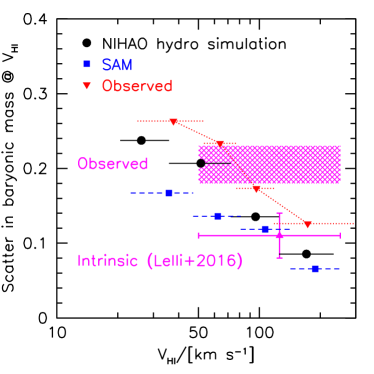
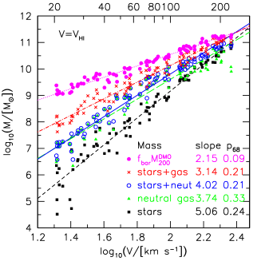
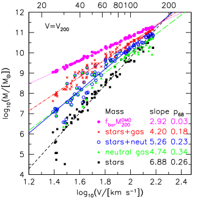
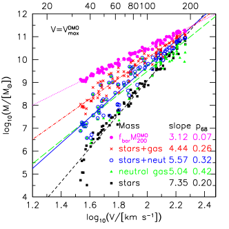
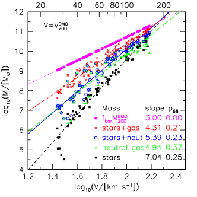
بالنسبة إلى المجرات ذات السرعات في المجال ، يبلغ التشتت المرصود والتشتت الذاتي في BTF مقدار و dex، على الترتيب (Lelli et al., 2016). وعلى كامل مجال السرعة الذي تستكشفه محاكيات NIHAO ، يبلغ التشتت الكلي حول ملاءمة قانون قوة 0.21 dex (الشكل 4). وهذا قابل للمقارنة بالتشتت المرصود، لكنه أكبر بكثير من التشتت الذاتي المقدر، مما يعني اسميا عدم اتساق بين محاكيات والأرصاد.
غير أن التشتت في محاكياتنا يعتمد بقوة على السرعة، مع تشتت أصغر للمجرات ذات السرعات الأعلى. يعرض الشكل 6 تشتت محاكيات NIHAO في خانات ربعية للسرعة. فالمجرات منخفضة السرعة لها تشتت قدره dex، بينما المجرات عالية السرعة لها تشتت من 0.08 إلى 0.14 dex، في اتفاق جيد مع التشتت الذاتي المرصود على هذه المقاييس. ويعرض الشكل 6 أيضا SAM لدى Dutton (2012)، الذي يتغير تشتته من 0.17 dex عند السرعات المنخفضة إلى 0.07 dex عند السرعات العالية. ومن المتوقع اسميا أن يكون للمحاكيات الهيدروديناميكية، التي تتضمن عمليات فيزيائية أكثر من SAM، تشتت أكبر، وهو ما يحدث بالفعل.
وبالنظر إلى التباين المحتمل الذي نجده بين النظرية والرصد عند السرعات المنخفضة ()، سيكون من المهم دراستها بمزيد من التفصيل، سواء لتحسين التنبؤات أو للحصول على عينات رصدية أكبر. ومن الاعتبارات المهمة أن منحنيات الدوران ترتفع ببطء أكبر مما في المجرات العالية الكتلة (انظر الشكل 3). وهذا يعني أن الهيدروجين المتعادل المرصود لا يبلغ دائما الجزء المسطح من منحنى الدوران. وما زال محل نقاش ما إذا كان ذلك يسبب انحيازا في BTF عند الكتل المنخفضة أم لا (Brook et al., 2016; Lelli et al., 2016)، ومن ثم فهو موضوع مهم ينبغي أن تحسمه الدراسات المستقبلية.
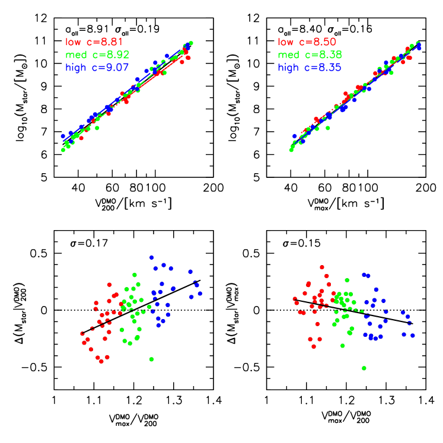
3.2 علاقات سرعة الهالة المظلمة مقابل الكتلة
يعرض الشكل 7 العلاقات بين كتل مجرية مختلفة (الكتلة الباريونية الكلية، والكتلة الباريونية المجرية، والكتلة النجمية، وكتلة الغاز المتعادل) وسرعات مختلفة (). تذكر أن و مكافئتان بحكم التعريف لكتلة الهالة لأن . نلائم كل علاقة بقانون قوة عبر كامل مجال السرعة. وتعرض العلاقات ذات أفضل ملاءمة بخطوط من اللون نفسه لنقاط البيانات المقابلة. إن أضحل علاقة في كل لوحة تتضمن الكتلة الباريونية الكلية المتاحة (الأرجواني)، التي لها بحكم التعريف ميل 3 في اللوحة السفلية اليسرى. وكل العلاقات الخاصة بمكونات كتلة المجرة ذات ميول أشد، وهو ما يقابل كفاءة أدنى لتشكل المجرات (سواء عرّفت بأنها غاز متعادل أو نجوم أو باريونات كلية).
تعرض اللوحة العلوية اليمنى من الشكل 7 العلاقة بين الكتلة والسرعة الفريالية لمحاكاة hydro، . كل هذه العلاقات أشد انحدارا من العلاقات المقابلة التي تستخدم . ولاحظ أيضا أن الهالات الأقل كتلة احتفظت بكسر أصغر من باريوناتها (قارن النقاط والخطوط الحمراء والأرجوانية؛ وانظر أيضا Wang et al., 2016). ويزداد التشتت عند الانتقال من الكتلة الباريونية الكلية (صلبان حمراء)، إلى الكتلة الباريونية المجرية (دوائر زرقاء)، إلى الكتلة النجمية (مربعات سوداء)، وأخيرا إلى كتلة الغاز المتعادل (مثلثات خضراء). وهذا يدعم فكرة أن الكتلة الباريونية خاصية مجرية أكثر أساسية من الكتلة النجمية أو كتلة الغاز كل على حدة.
تعرض اللوحة السفلية اليسرى النتائج باستخدام السرعة الدائرية العظمى من محاكاة DMO، ، بينما تستخدم اللوحة السفلية اليمنى السرعة الدائرية الفريالية من محاكاة DMO، . وتكون الميول أشد قليلا مع مما مع بسبب ازدياد فقدان الكتلة من الهالات الأقل كتلة، وأشد انحدارا أيضا عند استخدام لأن الهالات الأقل كتلة لها أعلى بسبب تراكيزها الوسطية الأعلى (تذكر أن علاقة التركيز مقابل السرعة لهالات CDM تسير مثل ).
وبمقارنة اللوحات المختلفة في الشكل 7، نرى أن الكتلة النجمية ترتبط بالسرعة العظمى للهالة أفضل من ارتباطها بالسرعة الفريالية، في حين ترتبط كتلة الغاز المتعادل والكتلة الباريونية الكلية بالسرعة الفريالية أفضل من السرعة العظمى. لذلك لا يوجد تعريف واحد للسرعة يقلل التشتت في كل المكونات الباريونية.
4 آثار ذلك على مطابقة وفرة الهالات
تمثل تقنية مطابقة وفرة الهالات طريقة قوية لربط كتل المجرات بكتل هالات المادة المظلمة، في ظل افتراض والمعلمات الكونية (Conroy & Wechsler, 2009). ويمكن استخدامها لفهم كيفية تشكل النجوم عبر الزمن الكوني. وفي أبسط صورها، تقوم الفرضية على أن المجرات الأعلى كتلة تعيش في هالات مادة مظلمة أعلى كتلة. في محاكياتنا يكون التشتت في الكتلة النجمية عند سرعة هالة فريالية أو دائرية عظمى ثابتة صغيرا، dex، ومستقلا عن سرعة الهالة من أجل (). وهذا يدعم نهج مطابقة وفرة الهالات للهالات المركزية. وعند أدنى كتل هالات نستكشفها () يبدأ التشتت بالازدياد، بما يتسق مع دراسات محاكاة أخرى (e.g., Sawala et al., 2016).
وباستخدام أرصاد تكتل المجرات المسقط ذي النقطتين، أظهر Reddick et al. (2013) أن السرعة الدائرية القمية لهالة المادة المظلمة (على تاريخ الهالة) ترتبط بالكتلة النجمية أوثق من ارتباط السرعة الفريالية للهالة بها. وغالبا ما تفضل السرعة الدائرية العظمى (سواء عند زمن معين أو على تاريخ الهالة) على كتلة الهالة (أو السرعة الفريالية) لأن (1) لا تعتمد على تعريف كتلة الهالة (الاعتباطي إلى حد ما)؛ و(2) أقل حساسية لتجريد الكتلة الذي تختبره الهالات الفرعية؛ و(3) يسبر مقياسا أصغر، يفترض أن له صلة أكبر بتشكل المجرات من المقياس الفريالي.
في محاكياتنا لتشكل المجرات نجد بالفعل أن السرعة الدائرية العظمى (في الوقت الحاضر) لمحاكاة DMO تعطي تشتتا كليا أصغر (0.20 dex) في الكتلة النجمية من السرعة الفريالية (0.25 dex) لمحاكاة hydro أو DMO (الشكل 7). وينتج عن حذف الهالات ذات ، التي لها تشتت كبير جدا في الكتلة النجمية، تشتتات أصغر مقدارها 0.17 و0.19 dex لـ و، على الترتيب.
وإمعانا في ذلك، دار نقاش حديث في الأدبيات حول اعتماد مطابقة الوفرة على تركيز هالة المادة المظلمة (Mao et al., 2015; Paranjape et al., 2015; Zentner et al., 2016; Lehmann et al., 2017). ومن ثم نبحث أكثر فيما إذا كان معامل إضافي أو تعريف مختلف لسرعة الهالة يعطي علاقة أوثق بين الكتلة النجمية وسرعة الهالة.
4.1 اعتماد علاقات الكتلة النجمية مقابل سرعة الهالة على التركيز
تعرض اللوحات اليسرى من الشكل 8 علاقة الكتلة النجمية مقابل السرعة الفريالية للهالة واعتمادها على تركيز الهالة. وهنا، نستخدم نسبة السرعتين الدائرية العظمى والفريالية في محاكاة DMO وكيلا للتركيز: . وعند سرعة هالة ثابتة، ، يوجد اتجاه مع التركيز بحيث تمتلك الهالات الأعلى تركيزا كتل نجمية أعلى. ويفسر ذلك على نحو معقول بأن الهالات الأعلى تركيزا تتشكل في المتوسط مبكرا (e.g., Wechsler et al., 2002)، ومن ثم يكون لديها وقت أطول لتشكيل النجوم. يبلغ التشتت الكلي 0.19 dex (أعلى اليسار)، ويمكن خفضه إلى 0.17 dex (أسفل اليسار) بإدراج الارتباط مع التركيز. ويظهر اتجاه مشابه في علاقات الكتلة النجمية مقابل كتلة الهالة في محاكيات eagle (Matthee et al., 2017). فقد وجدوا أن الهالات الأسبق تشكلا والأعلى تركيزا لها كتلة نجمية أعلى.
تعرض اللوحات اليمنى من الشكل 8 النتائج نفسها باستخدام السرعة الدائرية العظمى للهالة بدلا من السرعة الفريالية. والآن يكون الارتباط مع التركيز أضعف وذا إشارة معاكسة. ويوحي تغير إشارة الارتباط بأن سرعة مقيسة في موضع ما بين نصف القطر الفريالي و (حيث يحدث ) ستنتج ارتباطا أوثق مع الكتلة النجمية للمجرة. يبلغ التشتت الكلي 0.17 dex (أعلى اليمين)، ويمكن خفضه إلى 0.14 dex (أسفل اليمين) بإدراج الارتباط مع التركيز.
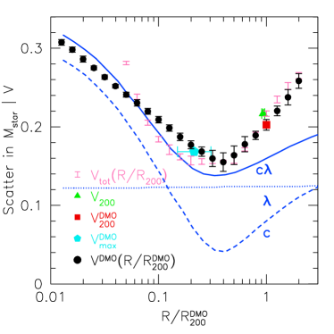
4.2 اعتماد التشتت على تعريف سرعة الهالة
يعرض الشكل 9 التشتت في علاقة مع السرعة المقيسة عند كسور مختلفة من نصف القطر الفريالي، ، في محاكيات DMO. ونجد أن التشتت الأدنى، dex، يحدث عندما تقاس السرعة الدائرية عند . وهذا يقابل فرط كثافة قدره . وهذا التشتت أصغر حتى من التشتت عند استخدام السرعة الدائرية العظمى لمحاكاة DMO (0.17 dex)، التي تحدث عادة عند (خماسي أزرق). وللمرجع تحدث السرعة الدائرية العظمى عند .
رصديا، يبين Lehmann et al. (2017) أن قياسات التكتل عند انزياح أحمر منخفض من SDSS تفضل قدرا متوسطا من الاعتماد على التركيز (أكبر مما تشير إليه مطابقة لمعان المجرة مع كتلة الهالة القمية، وأقل مما تشير إليه المطابقة مع السرعة الدائرية القمية للهالة). وبتعريف سرعة الهالة على أنها
| (2) |
وجد Lehmann et al. (2017) أن التشتت في الكتلة النجمية يبلغ حده الأدنى عند من أجل . ونجد نتائج مماثلة في محاكياتنا الهيدروديناميكية. يعرض الشكل 10 التشتت في علاقة الكتلة النجمية مقابل بوصفه دالة في . ويبلغ التشتت حده الأدنى عند .
وللمساعدة في فهم أصل النتائج في الشكلين 8-10، نعرض نتائج من SAM لدى Dutton (2012). تذكر أن هناك معاملين فقط يمكن أن يسببا تغيرا في خواص المجرات: تركيز الهالة، ، ولف الهالة، . لاحظ أن تعريف الهالة في SAM يتبع Bryan & Norman (1998)، بينما نعتمد في محاكيات NIHAO فرط كثافة قدره ، ومن ثم نحسب في التحليل الوارد في الشكلين 8 و10 كلا من و. ويكون كل من و موزعا لوغ-طبيعيا ومستقلا عند الانزياح الأحمر مع و (Macciò et al., 2008). وبالنسبة إلى هالة معينة، يفترض أن يكون اللف ثابتا مع الزمن. ويرتبط التشتت في التركيز بتاريخ تشكل الهالة وفق Wechsler et al. (2002).
ومن اللافت أن SAM يملك تشتتا أدنى عند أنصاف الأقطار نفسها و. وتشير حقيقة أننا نجد نتائج مماثلة في SAM كما في المحاكاة الهيدروديناميكية الكاملة إلى أن لهذه الاتجاهات أصلا فيزيائيا بسيطا. وبالإضافة إلى النموذج الافتراضي، نشغل نماذج ذات تشتت في فقط أو في فقط. وتبين هذه أن الحد الأدنى في التشتت مدفوع حصرا بالتشتت في معامل التركيز.
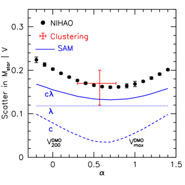
4.3 بنية الهالة أم زمن التكوين؟
كما نوقش في Zentner et al. (2016)، يرتبط تركيز الهالة بخاصيتين فيزيائيتين لهالة المادة المظلمة يمكن أن تؤثرا في كفاءة تشكل النجوم: زمن تشكل الهالة وعمق الجهد. فالهالات الأسبق تشكلا سيكون لديها وقت أطول لتشكيل النجوم (مثلا، انظر الشكل 12 من Dutton et al., 2010a)، في حين أن الهالات ذات آبار الجهد الأعمق (وسرعات الإفلات الأعلى) ستكون أقل عرضة لآليات التغذية الراجعة التي تكبح تشكل النجوم. وما يزال السبب الدقيق الذي يجعل ذلك ينتج مقياسا مفضلا قدره بحاجة إلى تحديد.
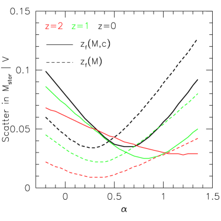
كمحاولة أولى لفصل هذين الأثرين، نشغل SAM مرة أخرى ولكن من دون اقتران بين تركيز الهالة وتاريخ تراكم الكتلة. وهنا ندرج فقط تشتتا في تركيز الهالة لجعل الحد الأدنى أوضح. وتعرض النتائج في الشكل 11. في SAM الضابط (الخطوط المتقطعة) يكون انزياح تشكل الهالة الأحمر دالة فقط في كتلة الهالة، ، بينما يكون انزياح التكون الأحمر في SAM القياسي (الخطوط المتصلة) دالة في الكتلة والتركيز عند ، . وعند (خطوط سوداء) يكون لـ SAM الضابط حد أدنى للتشتت عند مقارنة بـ في SAM القياسي. ومن ثم فإن الارتباط بين التركيز وتاريخ تراكم الكتلة مطلوب لمطابقة محاكيات hydro في NIHAO ولمطابقة المرصود.
ونعرض أيضا نتائج عند انزياحات حمراء (أخضر) و (أحمر). وعند انزياحات حمراء أعلى يظل لـ SAM الجديد حد أدنى للتشتت عند ، لكن في SAM القياسي ينتقل إلى قيم أعلى. ومن ثم لا نتوقع أن يقلل تعريف سرعة الهالة نفسه التشتت في الكتلة النجمية عند كل الانزياحات الحمراء.
4.4 اعتماد على سرعة الهالة
يعرض الشكل 12 التشتت في علاقة الكتلة النجمية مقابل لمجالات مختلفة من سرعة الهالة. وتعرض الهالات منخفضة السرعة () بمثلثات (NIHAO) وخط منقط (SAM)، ولها . أما الهالات عالية السرعة () فتعرض بمربعات (NIHAO) وخط متقطع (SAM)، ولها .
بالنسبة إلى SAM يمكننا تقسيم مجال السرعة بدرجة أكبر لأن لدينا عينات أكبر. نجد مقياسا حرجا قدره (). ودون هذا المقياس تكون لكل الهالات التي ندرسها (نزولا إلى ). وفوق هذا المقياس تزداد مع كتلة الهالة لتبلغ عند ، و عند . وفي SAM الضابط نجد سرعة الهالة الحرجة نفسها ولكن مع من أجل ، بينما بالنسبة إلى السرعات الأعلى فإن ينخفض ويقترب من عند .
في SAM نربط هذا المقياس الحرج البالغ بعتبة تشكل الهالات الحارة. دون هذا المقياس يكون التبريد عالي الكفاءة، بحيث يصل عمليا كل الغاز الذي يدخل الهالة إلى المجرة المركزية خلال زمن السقوط الحر. وفوق هذا المقياس يبدأ التبريد بأن يصبح غير كفء، مما يقلل إمداد الغاز إلى المجرة المركزية ويخفض تشكل النجوم اللاحق.
4.5 اعتماد على تعريف كتلة المجرة
يعرض الشكل 13 التشتت في الكتلة عند سرعة ثابتة لثلاثة مكونات كتلية مختلفة: النجوم (أسود)، والغاز المتعادل (أخضر)، والنجوم زائد الغاز المتعادل (أزرق). وعلى خلاف النجوم، لدى الغاز المتعادل ، وهو ما يقابل . تذكر أننا رأينا نتيجة مشابهة في الشكل 7 الذي بين أن الغاز المتعادل يرتبط بـ أفضل من . وكما هو متوقع، فإن مجموع النجوم والغاز المتعادل له تشتت وسيط بين المكونين، وتحدث عند قيمة وسيطة من . ومرة أخرى تعطي محاكيات hydro وSAM نتائج متشابهة لـ للمكونات الكتلية المختلفة.
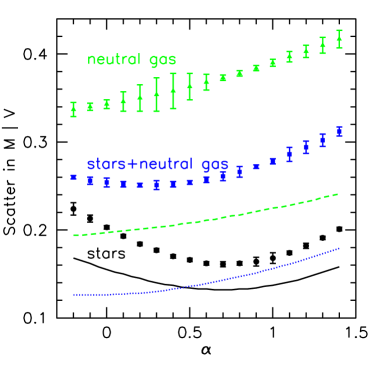
5 ملخص
ندرس علاقات القياس بين كتلة المجرة والسرعة الدائرية في هالات كتلتها . نستخدم عينة من 83 محاكاة مكتملة كوسمولوجيا لتشكل المجرات من مشروع NIHAO (Wang et al., 2015)، وSAM لدى Dutton (2012). ونلخص نتائجنا على النحو الآتي:
-
•
تتسق المحاكيات مع علاقات BTF والنجمية والغاز المتعادل المرصودة (الشكل 4).
-
•
بالنسبة إلى علاقة BTF، تمتلك محاكياتنا تشتتا صغيرا قدره 0.08-0.14 dex في الكتلة من أجل ، بما يتسق مع التقديرات الرصدية (الشكل 6). وعند سرعات أدنى تتنبأ محاكياتنا بتشتتات أكبر من 0.2 إلى 0.25 dex، وربما تكون في تعارض مع الأرصاد.
-
•
يكون التشتت في الكتلة النجمية عند سرعة هالة ثابتة ثابتا من أجل . وتوفر السرعة الدائرية العظمى لمحاكاة DMO، ، متنبئا أفضل بالكتلة النجمية من السرعة الفريالية لمحاكاة DMO (أو hydro) (الشكل 7). غير أنه بالنسبة إلى الغاز والكتلة الباريونية تكون السرعة الفريالية متنبئا أفضل من السرعة العظمى. ومن ثم لا يوجد تعريف واحد للسرعة يقلل التشتت في كل المكونات الباريونية.
-
•
يرتبط تطبيع علاقة الكتلة النجمية مقابل السرعة الفريالية بتركيز الهالة. وتنخفض هذه الارتباطات بصورة جوهرية في علاقة الكتلة النجمية مقابل (الشكل 8).
-
•
إن قياس السرعة الدائرية عند يقلل التشتت في علاقة الكتلة النجمية مقابل سرعة الهالة إلى 0.15 dex (الشكل 9).
- •
-
•
في SAM، عندما نفصل زمن تشكل الهالة عن تركيزها، نجد عند كل الانزياحات الحمراء (الشكل 11)، بينما في SAM القياسي يزداد مع الانزياح الأحمر، ليبلغ عند . ومن ثم فإن الارتباط بين زمن تشكل الهالة وتركيزها أساسي لإعادة إنتاج الموجودة في محاكيات hydro الخاصة بـ NIHAO والمستخلصة من قيود التكتل.
-
•
نجد أن أعلى في الهالات الأعلى سرعة (الشكل 12). وباستخدام SAM نجد أن ذلك يرتبط بتشكل هالات حارة فوق .
يشير التشتت الصغير في علاقات TF من محاكيات NIHAO ومن SAM لدى Dutton (2012) إلى بساطة تشكل المجرات الناتجة من التنظيم الذاتي بين تشكل النجوم والتغذية الراجعة الطاقية من النجوم العالية الكتلة.
ويبدو أن اعتماد التشتت في علاقة الكتلة النجمية مقابل سرعة الهالة على التركيز خاصية أساسية لتشكل المجرات في كون ، ومن ثم يمكن استخدامه لتحسين دقة نماذج مطابقة وفرة الهالات.
شكر وتقدير
نشكر المحكم على تعليقات مفيدة حسنت العرض وحفزت تحليلا أعمق. أجري هذا البحث على موارد الحوسبة عالية الأداء في New York University Abu Dhabi؛ وعلى عنقود theo في Max-Planck-Institut für Astronomie وعنقود hydra في Rechenzentrum في Garching؛ وعلى الحاسوب الفائق Milky Way، الممول من Deutsche Forschungsgemeinschaft (DFG) عبر Collaborative Research Center (SFB 881) “The Milky Way System” (المشروع الفرعي Z2) والمستضاف والممول جزئيا من Jülich Supercomputing Center (JSC). ونقدر كثيرا مساهمات كل مخصصات الحوسبة هذه. حصل TB وTAG على دعم من Sonderforschungsbereich SFB 881 “The Milky Way System” (المشروعان الفرعيان A1 وA2) التابعة لـ DFG. استفاد التحليل من حزمة pynbody (Pontzen et al., 2013). يقر XK بالدعم المقدم من مشروع NSFC رقم 11333008 ومن Strategic Priority Research Program ‘The Emergence of Cosmological Structures’ التابع لـ CAS (No.XD09010000).
References
- Behroozi et al. (2013) Behroozi, P. S., Wechsler, R. H., & Conroy, C. 2013, ApJ, 770, 57
- Bell & de Jong (2001) Bell, E. F., & de Jong, R. S. 2001, ApJ, 550, 212
- Blumenthal et al. (1986) Blumenthal, G. R., Faber, S. M., Flores, R., & Primack, J. R., 1986, ApJ, 301, 27
- Bradford et al. (2016) Bradford, J. D., Geha, M. C., & van den Bosch, F. C. 2016, ApJ, 832, 11
- Brook et al. (2016) Brook, C. B., Santos-Santos, I., & Stinson, G. 2016, MNRAS, 459, 638
- Bryan & Norman (1998) Bryan, G. L., & Norman, M. L. 1998, ApJ, 495, 80
- Chan et al. (2015) Chan, T. K., Kereš, D., Oñorbe, J., et al. 2015, MNRAS, 454, 2981
- Conroy & Wechsler (2009) Conroy, C., & Wechsler, R. H. 2009, ApJ, 696, 620
- Courteau et al. (2007) Courteau, S., Dutton, A. A., van den Bosch, F. C., MacArthur, L. A., Dekel, A., McIntosh, D. H., & Dale, D. A. 2007, ApJ, 671, 203
- Desmond & Wechsler (2015) Desmond, H., & Wechsler, R. H. 2015, MNRAS, 454, 322
- Dutton et al. (2007) Dutton, A. A., van den Bosch, F. C., Dekel, A., & Courteau, S. 2007, ApJ, 654, 27
- Dutton & van den Bosch (2009) Dutton, A. A., & van den Bosch, F. C. 2009, MNRAS, 396, 141
- Dutton et al. (2010b) Dutton, A. A., Conroy, C., van den Bosch, F. C., Prada, F., & More, S. 2010b, MNRAS, 407, 2
- Dutton et al. (2010a) Dutton, A. A., van den Bosch, F. C., & Dekel, A. 2010a, MNRAS, 405, 1690
- Dutton et al. (2011) Dutton, A. A., Conroy, C., van den Bosch, F. C., et al. 2011, MNRAS, 416, 322
- Dutton (2012) Dutton, A. A. 2012, MNRAS, 424, 3123
- Dutton & Macciò (2014) Dutton, A. A., & Macciò, A. V. 2014, MNRAS, 441, 3359
- Dutton et al. (2016) Dutton, A. A., Macciò, A. V., Frings, J., et al. 2016a, MNRAS, 457, L74
- Faber & Jackson (1976) Faber, S. M., & Jackson, R. E. 1976, ApJ, 204, 668
- Gill et al. (2004) Gill, S. P. D., Knebe, A., & Gibson, B. K. 2004, MNRAS, 351, 399
- Gnedin et al. (2004) Gnedin, O. Y., Kravtsov, A. V., Klypin, A. A., & Nagai, D. 2004, ApJ, 616, 16
- Governato et al. (2007) Governato, F., Willman, B., Mayer, L., et al. 2007, MNRAS, 374, 1479
- Gutcke et al. (2017) Gutcke, T. A., Stinson, G. S., Macciò, A. V., Wang, L., & Dutton, A. A. 2017, MNRAS, 464, 2796
- Hudson et al. (2015) Hudson, M. J., Gillis, B. R., Coupon, J., et al. 2015, MNRAS, 447, 298
- Knollmann & Knebe (2009) Knollmann, S. R., & Knebe, A. 2009, ApJS, 182, 608
- Keller et al. (2014) Keller, B. W., Wadsley, J., Benincasa, S. M., & Couchman, H. M. P. 2014, MNRAS, 442, 3013
- Kravtsov (2013) Kravtsov, A. V. 2013, ApJ, 764, L31
- Leauthaud et al. (2012) Leauthaud, A., Tinker, J., Bundy, K., et al. 2012, ApJ, 744, 159
- Lehmann et al. (2017) Lehmann, B. V., Mao, Y.-Y., Becker, M. R., Skillman, S. W., & Wechsler, R. H. 2017, ApJ, 834, 37
- Lelli et al. (2016) Lelli, F., McGaugh, S. S., & Schombert, J. M. 2016, ApJ, 816, L14
- Macciò et al. (2008) Macciò, A. V., Dutton, A. A., & van den Bosch, F. C. 2008, MNRAS, 391, 1940
- Macciò et al. (2016) Macciò, A. V., Udrescu, S. M., Dutton, A. A., et al. 2016, MNRAS, 463, L69
- Mandelbaum et al. (2006) Mandelbaum, R., Seljak, U., Kauffmann, G., Hirata, C. M., & Brinkmann, J. 2006, MNRAS, 368, 715
- Mao et al. (2015) Mao, Y.-Y., Williamson, M., & Wechsler, R. H. 2015, ApJ, 810, 21
- Marinacci et al. (2014) Marinacci, F., Pakmor, R., & Springel, V. 2014, MNRAS, 437, 1750
- Matthee et al. (2017) Matthee, J., Schaye, J., Crain, R. A., et al. 2017, MNRAS, 465, 2381
- McGaugh et al. (2000) McGaugh, S. S., Schombert, J. M., Bothun, G. D., & de Blok, W. J. G. 2000, ApJ, 533, L99
- McGaugh (2012) McGaugh, S. S. 2012, AJ, 143, 40
- McGaugh & Schombert (2015) McGaugh, S. S., & Schombert, J. M. 2015, ApJ, 802, 18
- Mo et al. (1998) Mo, H. J., Mao, S., & White, S. D. M. 1998, MNRAS, 295, 319
- More et al. (2011) More, S., van den Bosch, F. C., Cacciato, M., et al. 2011, MNRAS, 410, 210
- Moster et al. (2010) Moster, B. P., Somerville, R. S., Maulbetsch, C., et al. 2010, ApJ, 710, 903
- Navarro & Steinmetz (2000) Navarro, J. F., & Steinmetz, M. 2000, ApJ, 538, 477
- Papastergis et al. (2015) Papastergis, E., Giovanelli, R., Haynes, M. P., & Shankar, F. 2015, A&A, 574, A113
- Paranjape et al. (2015) Paranjape, A., Kovač, K., Hartley, W. G., & Pahwa, I. 2015, MNRAS, 454, 3030
- Planck Collaboration et al. (2014) Planck Collaboration, Ade, P. A. R., Aghanim, N., et al. 2014, A&A, 571, A16
- Pontzen et al. (2013) Pontzen, A., Roškar, R., Stinson, G., & Woods, R. 2013, Astrophysics Source Code Library, 1305.002
- Rahmati et al. (2013) Rahmati, A., Schaye, J., Pawlik, A. H., & Raičevi, M. 2013, MNRAS, 431, 2261
- Reddick et al. (2013) Reddick, R. M., Wechsler, R. H., Tinker, J. L., & Behroozi, P. S. 2013, ApJ, 771, 30
- Reyes et al. (2011) Reyes, R., Mandelbaum, R., Gunn, J. E., Pizagno, J., & Lackner, C. N. 2011, MNRAS, 417, 2347
- Sawala et al. (2016) Sawala, T., Frenk, C. S., Fattahi, A., et al. 2016, MNRAS, 457, 1931
- Stinson et al. (2006) Stinson, G., Seth, A., Katz, N., et al. 2006, MNRAS, 373, 1074
- Stinson et al. (2013) Stinson, G. S., Brook, C., Macciò, A. V., et al. 2013, MNRAS, 428, 129
- Tollet et al. (2016) Tollet, E., Macciò, A. V., Dutton, A. A., et al. 2016, MNRAS, 456, 3542
- Tully & Fisher (1977) Tully, R. B., & Fisher, J. R. 1977, A&A, 54, 661
- Wadsley et al. (2004) Wadsley, J. W., Stadel, J., & Quinn, T. 2004, New Astron., 9, 137
- Wang et al. (2015) Wang, L., Dutton, A. A., Stinson, G. S., Macciò, A. V., Penzo, C., Kang, X., Keller, B. W., Wadsley, J. 2015, MNRAS, 454, 83
- Wang et al. (2016) Wang, L., Dutton, A. A., Stinson, G. S., et al. 2016, arXiv:1601.00967, MNRAS in press
- Wechsler et al. (2002) Wechsler, R. H., Bullock, J. S., Primack, J. R., Kravtsov, A. V., & Dekel, A. 2002, ApJ, 568, 52
- Yang et al. (2003) Yang, X., Mo, H. J., & van den Bosch, F. C. 2003, MNRAS, 339, 1057
- Zentner et al. (2016) Zentner, A. R., Hearin, A., van den Bosch, F. C., Lange, J. U., & Villarreal, A. 2016, arXiv:1606.07817
| ID | ||||||||||
|---|---|---|---|---|---|---|---|---|---|---|
| [] | [] | [] | [] | [] | [] | [] | [] | [] | [] | |
| (1) | (2) | (3) | (4) | (5) | (6) | (7) | (8) | (9) | (10) | (11) |
| g4.36e09 | -0.032 | 1.318 | 1.579 | 1.483 | 1.492 | 4.518 | 6.574 | 6.578 | 8.222 | 9.205 |
| g4.99e09 | -0.086 | 1.351 | 1.544 | 1.406 | 1.445 | 5.575 | 7.244 | 7.253 | 7.926 | 9.064 |
| g5.22e09 | -0.036 | 1.394 | 1.547 | 1.420 | 1.455 | 5.070 | 7.164 | 7.167 | 7.961 | 9.094 |
| g5.41e09 | -0.244 | 1.319 | 1.570 | 1.390 | 1.438 | 6.084 | 7.044 | 7.089 | 7.627 | 9.043 |
| g5.59e09 | -0.208 | 1.329 | 1.576 | 1.424 | 1.471 | 6.240 | 7.184 | 7.231 | 7.860 | 9.142 |
| g5.84e09 | -0.108 | 1.316 | 1.555 | 1.412 | 1.443 | 5.064 | 7.214 | 7.217 | 7.961 | 9.056 |
| g7.05e09 | -0.004 | 1.313 | 1.612 | 1.494 | 1.551 | 6.355 | 6.484 | 6.725 | 8.191 | 9.381 |
| g7.34e09 | -0.187 | 1.330 | 1.558 | 1.414 | 1.454 | 5.626 | 7.074 | 7.089 | 7.900 | 9.089 |
| g9.26e09 | 0.097 | 1.404 | 1.535 | 1.416 | 1.470 | 4.730 | 6.884 | 6.887 | 8.052 | 9.138 |
| g1.09e10 | 0.787 | 1.603 | 1.622 | 1.501 | 1.523 | 6.810 | 8.474 | 8.483 | 8.786 | 9.298 |
| g1.18e10 | 0.068 | 1.441 | 1.624 | 1.500 | 1.541 | 6.531 | 7.524 | 7.566 | 8.312 | 9.352 |
| g1.23e10 | 0.170 | 1.413 | 1.605 | 1.473 | 1.524 | 6.201 | 6.344 | 6.580 | 8.197 | 9.300 |
| g1.44e10 | 0.610 | 1.679 | 1.676 | 1.563 | 1.596 | 6.826 | 8.884 | 8.888 | 9.042 | 9.517 |
| g1.50e10 | 0.107 | 1.477 | 1.655 | 1.536 | 1.573 | 6.531 | 7.384 | 7.441 | 8.332 | 9.446 |
| g1.57e10 | -0.056 | 1.405 | 1.695 | 1.524 | 1.563 | 6.950 | 7.434 | 7.557 | 8.216 | 9.418 |
| g1.88e10 | 0.562 | 1.622 | 1.715 | 1.578 | 1.618 | 7.215 | 8.224 | 8.264 | 8.418 | 9.583 |
| g1.89e10 | 0.427 | 1.560 | 1.693 | 1.597 | 1.623 | 7.108 | 8.234 | 8.265 | 9.073 | 9.596 |
| g1.90e10 | 0.500 | 1.538 | 1.684 | 1.614 | 1.645 | 7.077 | 8.154 | 8.189 | 8.891 | 9.662 |
| g1.92e10 | 0.297 | 1.503 | 1.656 | 1.586 | 1.618 | 6.721 | 7.904 | 7.931 | 8.987 | 9.582 |
| g1.95e10 | 0.049 | 1.443 | 1.665 | 1.533 | 1.565 | 6.581 | 7.634 | 7.671 | 8.477 | 9.422 |
| g2.09e10 | 0.986 | 1.630 | 1.683 | 1.560 | 1.590 | 6.914 | 7.924 | 7.964 | 8.772 | 9.500 |
| g2.34e10 | 0.367 | 1.483 | 1.737 | 1.623 | 1.654 | 7.133 | 7.344 | 7.552 | 8.767 | 9.690 |
| g2.39e10 | 0.193 | 1.462 | 1.661 | 1.541 | 1.575 | 6.772 | 7.714 | 7.761 | 8.618 | 9.454 |
| g2.63e10 | 0.158 | 1.551 | 1.803 | 1.630 | 1.671 | 7.631 | 7.344 | 7.812 | 8.555 | 9.741 |
| g2.64e10 | 0.990 | 1.759 | 1.749 | 1.658 | 1.682 | 7.459 | 9.264 | 9.271 | 9.402 | 9.775 |
| g2.80e10 | 0.549 | 1.634 | 1.777 | 1.634 | 1.703 | 7.565 | 8.504 | 8.551 | 9.058 | 9.837 |
| g2.83e10 | 0.835 | 1.733 | 1.759 | 1.621 | 1.657 | 7.481 | 8.994 | 9.007 | 9.161 | 9.699 |
| g2.94e10 | 0.348 | 1.574 | 1.793 | 1.656 | 1.689 | 7.764 | 7.684 | 8.027 | 8.812 | 9.797 |
| g3.19e10 | 0.352 | 1.554 | 1.793 | 1.665 | 1.699 | 7.167 | 7.994 | 8.054 | 9.212 | 9.826 |
| g3.44e10 | 1.128 | 1.754 | 1.799 | 1.719 | 1.759 | 7.797 | 8.874 | 8.909 | 9.644 | 10.005 |
| g3.67e10 | 0.484 | 1.657 | 1.805 | 1.653 | 1.692 | 7.739 | 7.704 | 8.023 | 8.759 | 9.803 |
| g3.93e10 | 0.852 | 1.674 | 1.733 | 1.659 | 1.675 | 7.567 | 8.974 | 8.991 | 9.355 | 9.755 |
| g4.27e10 | 0.925 | 1.724 | 1.797 | 1.697 | 1.711 | 7.767 | 8.884 | 8.916 | 9.471 | 9.863 |
| g4.48e10 | 0.849 | 1.755 | 1.837 | 1.748 | 1.771 | 8.122 | 8.924 | 8.988 | 9.476 | 10.042 |
| g4.86e10 | 0.922 | 1.873 | 1.886 | 1.725 | 1.751 | 8.082 | 9.364 | 9.386 | 9.471 | 9.981 |
| g4.94e10 | 0.648 | 1.743 | 1.867 | 1.728 | 1.759 | 8.033 | 8.524 | 8.645 | 9.268 | 10.005 |
| g4.99e10 | 0.818 | 1.752 | 1.840 | 1.717 | 1.761 | 8.078 | 8.834 | 8.904 | 9.296 | 10.011 |
| g5.05e10 | 0.580 | 1.724 | 1.874 | 1.698 | 1.771 | 7.971 | 8.274 | 8.449 | 9.051 | 10.041 |
| g6.12e10 | 1.036 | 1.816 | 1.869 | 1.719 | 1.760 | 7.954 | 9.014 | 9.050 | 9.424 | 10.007 |
| g6.37e10 | 1.236 | 1.875 | 1.877 | 1.839 | 1.852 | 8.310 | 9.674 | 9.692 | 10.043 | 10.283 |
| g6.77e10 | 0.958 | 1.824 | 1.885 | 1.810 | 1.830 | 8.679 | 9.394 | 9.470 | 9.872 | 10.219 |
| g6.91e10 | 0.876 | 1.858 | 1.931 | 1.770 | 1.803 | 8.396 | 8.734 | 8.898 | 9.322 | 10.138 |
| g6.96e10 | 1.120 | 1.860 | 1.915 | 1.805 | 1.861 | 8.552 | 9.224 | 9.308 | 9.741 | 10.313 |
| g8.89e10 | 0.931 | 1.897 | 1.915 | 1.809 | 1.845 | 8.601 | 9.414 | 9.476 | 9.794 | 10.262 |
| g9.59e10 | 1.122 | 1.853 | 1.892 | 1.803 | 1.845 | 8.419 | 9.594 | 9.622 | 9.944 | 10.264 |
| g1.05e11 | 1.083 | 1.908 | 1.939 | 1.844 | 1.870 | 8.744 | 9.554 | 9.616 | 9.932 | 10.338 |
| g1.08e11 | 1.108 | 1.966 | 1.984 | 1.847 | 1.886 | 8.922 | 9.544 | 9.637 | 9.845 | 10.387 |
| g1.37e11 | 0.876 | 1.990 | 2.036 | 1.877 | 1.908 | 9.303 | 9.284 | 9.594 | 9.787 | 10.452 |
| g1.52e11 | 1.205 | 1.982 | 2.007 | 1.886 | 1.906 | 8.882 | 9.764 | 9.817 | 10.179 | 10.448 |
| g1.57e11 | 1.040 | 1.926 | 1.986 | 1.886 | 1.914 | 9.053 | 9.714 | 9.800 | 10.050 | 10.471 |
| g1.59e11 | 1.338 | 1.977 | 1.979 | 1.896 | 1.911 | 8.813 | 9.924 | 9.956 | 10.263 | 10.461 |
| g1.64e11 | 1.184 | 1.990 | 1.965 | 1.917 | 1.936 | 8.944 | 10.044 | 10.077 | 10.385 | 10.536 |